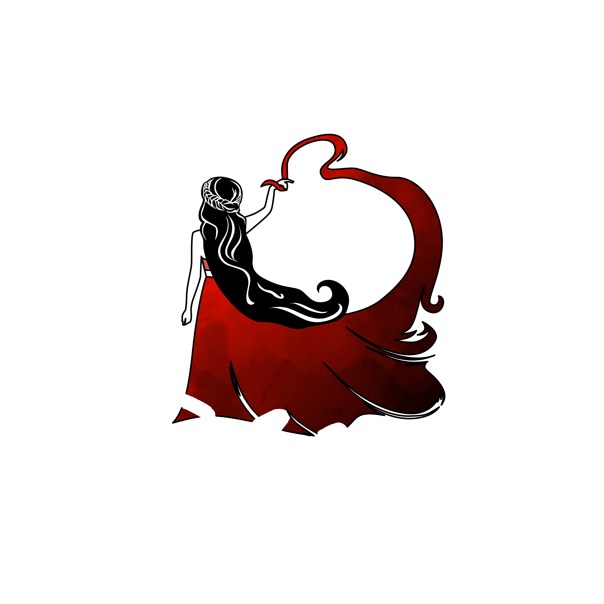

Dance and Art Studio

Our Studio
Based out of Fremont, California, Muse’s Cave is a safe haven for artists and creatives. With an open-rental policy, both California-natives and non-locals can rent our space to host a class, or simply surround themselves in a new environment to spark creative expression. From art classes to dance rehearsals and performances, we are all about allowing our space to serve as a muse for inspiration. In addition to expressional and performance art, we love renting Muse’s Cave out to yoga teachers for classes, photographers for workshops or gallery nights and small businesses for a fun and unique space to host their conferences. Along with the space itself, we provide backdrops for photographers and chairs and tables for conferences or workshops. We are equipped with a surround system, WiFi and full heat and AC. Muse’s Cave is run by a group of fellow creatives, so you can feel completely in your element when booking our space. We’re Erendira (founder, owner & creator), Becky (artist and Muse’s Cave advocate), and Itzel (co-owner and choreographer). You can get to know more about each of us below, or when you stop in to see what we’re all about! Our mission is to be a sanctuary for you to share, create and express yourself and your art. We’re so excited to meet you and be a part of your creative process!
Ere Lara
Founder, owner & creator of Muse’s Cave, Erendira is a certified life coach and domestic violence counselor by trade. From the time she was a child, she had always been fascinated by helping others in any way she could, so when she found out that being a life coach could be a feasible career path, she jumped at the chance to make it hers. As an immigrant, Erendira did not have much guidance forging a life for herself in America, so she takes pride in what she has created and the ways she is able to give back. A true perfectionist, Erendira is an enneagram type four (leaning one) and constantly strives for the best both in her personal and professional worlds. She is motivated daily by the love she is blessed to have from her family and friends and her constant desire to let go of old habits that no longer serve her. A true proponent of positivity, Erendira prides herself on the ability to transform hard situations of life into a positive lesson. The people around her describe her as wise, strong and powerful; traits she brings into running Muse’s Cave and serving as a haven for creatives. Another way Erendira loves serving people is through the power of food. She loves to cook and eat Mexican food and gets so much joy from watching those she loves, eat what she’s made. The ones closest to her always say she should own her own restaurant, too. She loves the color red because it represents love, passion and boldness; a true representation for the way Erendira strives to live her life. In her free time, she likes to spend self-reflecting moments alone, enjoying wine, reading, or learning something new. She has also always had a passion for music (especially oldies). Erendira is wise, strong, insightful and intuitive and focuses deeply on high quality control. She strives to be the best version of herself at all times and pushes for the same type of experience through Muse’s Cave. She believes that everyone has the power to better themselves through bravery and hardwork and she loves owning a space where many creative individuals can take the first step towards that.
Becky
Becky is a thirty-four year old creative originally hailing from Mexico, but living in the United States for over fifteen years. She is the mom of two boys who are her pride and joy. As a painter, she started her colorful adventure four years ago and is influenced by the power of women; the ability women have to nourish their hearts and minds by pursuing what they love, loving what they pursue and breaking down their own barriers, just like she did when she first started her creative journey. A lover of thai food and Amy Winehouse, Becky’s friends describe her as relaxed, fun and creative. Also an enneagram type four, Becky is a true individualist with a great sense of humor and what friends describe as the most contagious laugh! She enjoys being the unique one in a crowd of people and it means the world to her when her work is complimented or her friends and family express the value they feel in time spent with her. With Becky’s love for her, she admires the things around her at all times and loves to express the beauty in life through everything she does. She loves surrounding herself with people who are the same way and that is why Muse’s Cave is so special to her. It is a place where people can motivate each other, make deep connections and she can share her compassion for them and their art on a personal basis.
Itzel
Itzel is a nineteen-year-old female Chicana who is a freshman in college, planning to major in dance. From Fremont, California, she takes pride in knowing the community and space around Muse’s Cave and loves that it is a space for people to house their passions. When she was a sophomore in high school, Itzel realized her passion for dance at the time she was asked to choreograph for a school event called “Ritmo Latino”; a showcase of Latin dances. With a mostly Asian high school population, Itzel had always watched the Latin dances garner almost no attention, so she made it her mission to have the dance be both fun to watch but also culturally accurate. From that day on, Itzel’s passion for dance and what it could teach about a community grew stronger every second. She idolized people who followed their passion for dancing, like her dance teacher at school, and looked up to multiple LA choreographers. Currently in community college, she plans to transfer to UCLA for dance in the next two years. She loves true, authentic, Mexican food like “ribs in chipotle sauce” and “barbacoa with pickled cabbage”. Her favorite color is the color of royalty, a.k.a., purple and she spends her free time with her friends, playing plants vs. zombies, or watching things on YouTube. As someone who loves rhythm, the music she listens to always includes beats with African and/or Latin sounds. When she listens to music like that, her body just starts moving on its own and she gets a complete energy boost. She enjoys using Muse’s Cave as a space to express that and watch others do the same.